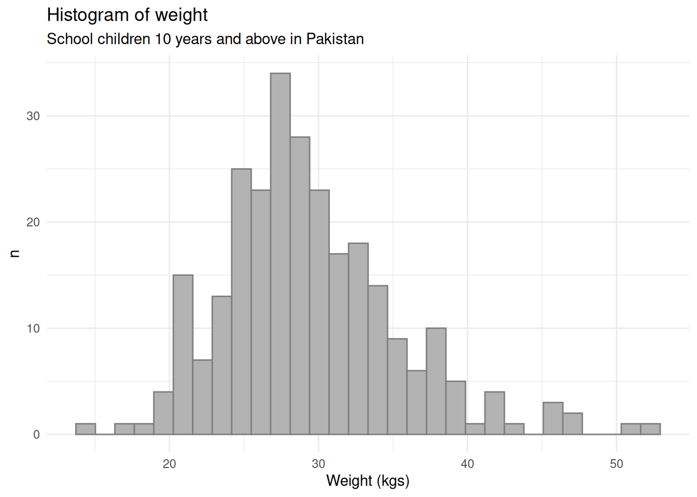
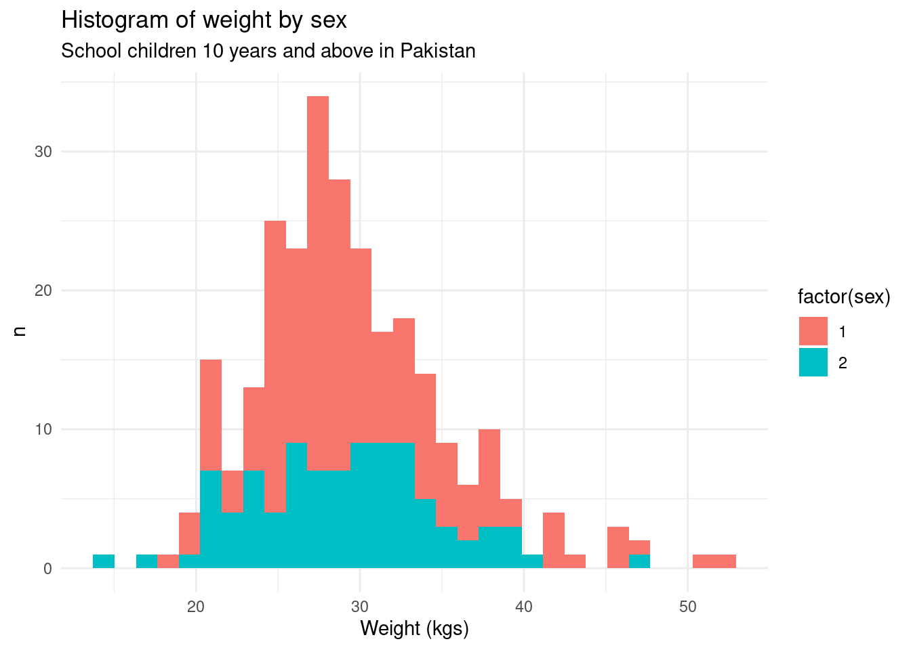
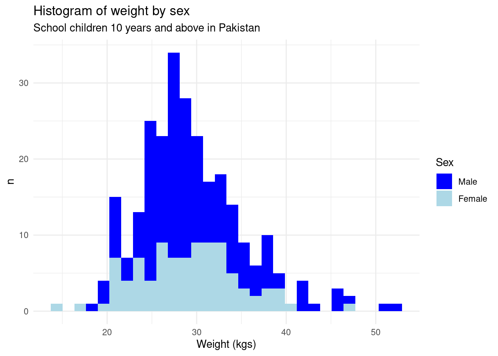
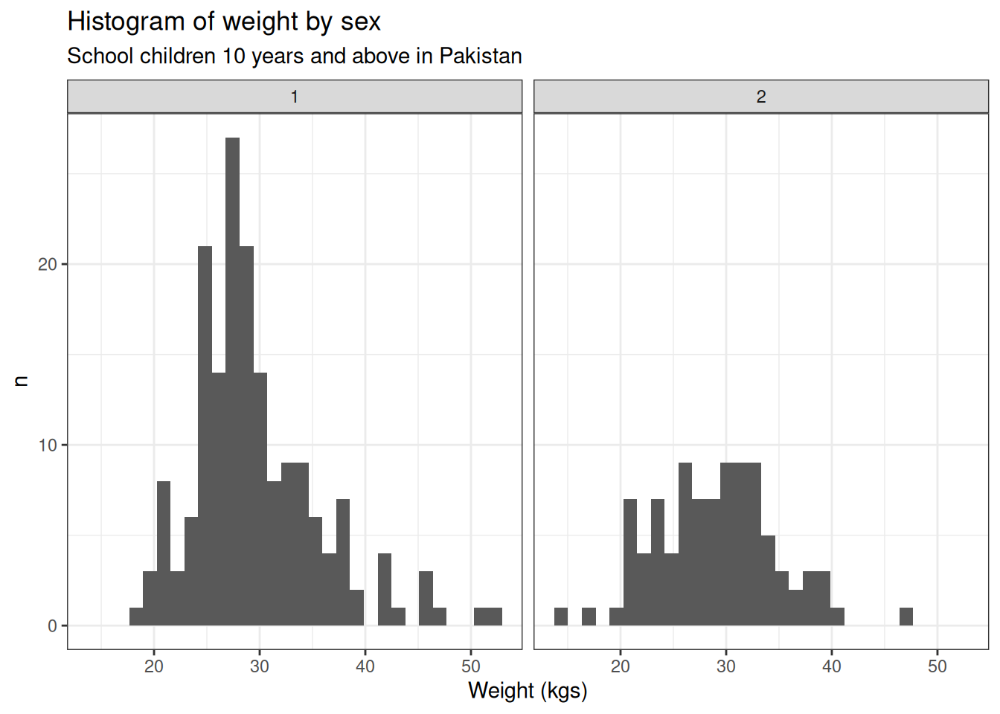
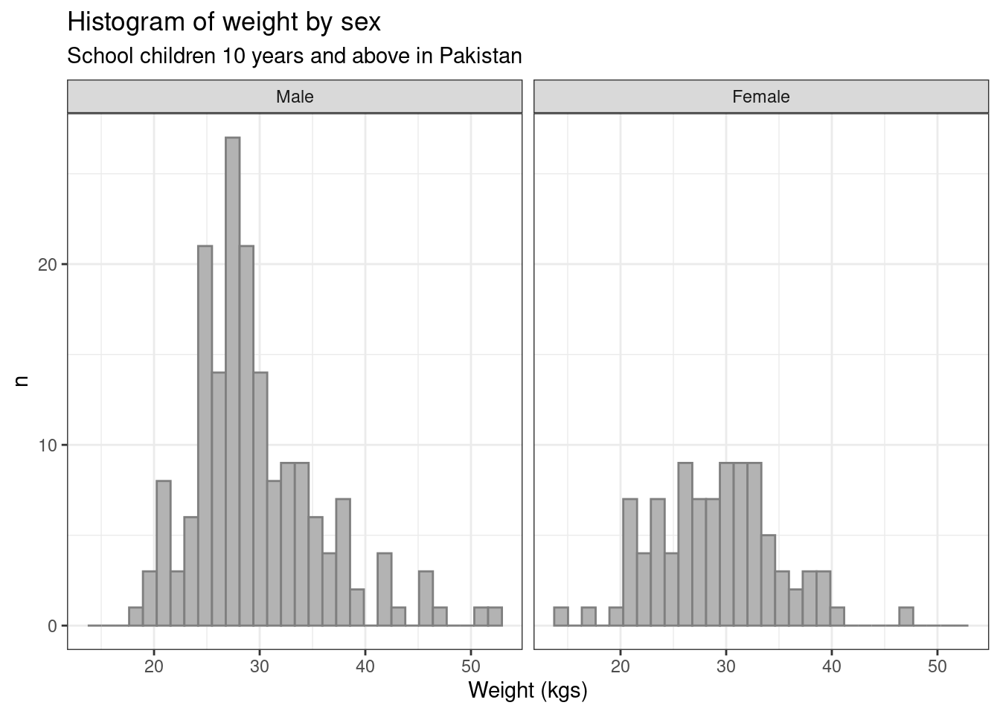

A histogram is a graphical representation of the distribution of numerical data. It’s useful for:
Visualizing Frequency Distribution: It shows how data is distributed over a range of values, displaying the frequency of data points within specific intervals (called bins).
Identifying Patterns: Histograms help in spotting patterns such as normal distribution, skewness (left or right), or multimodal distributions (having more than one peak).
Comparing Data: Histograms make it easy to compare the distribution of different datasets, especially when analyzing large volumes of data.
In this tutorial, we demonstrate how to create a histogram using the ggplot. We will use a dataset from a nutrition survey of school children 10 years and older from Pakistan. This dataset is available from the Oxford iHealthteaching datasets repository.
Reading the dataset
The school nutrition dataset is available as a CSV file from the teaching datasets repository. We can either download this CSV file and read it into R. Or we can read the CSV file directly from the repository. This can be done as follows:
## link to CSV from GitHub repository ----1csv_file_url <-"https://raw.githubusercontent.com/OxfordIHTM/teaching_datasets/refs/heads/main/school_nutrition.csv"## Read CSV file ----2nut_data <-read.csv(file = csv_file_url)
1
This URL can be retrieved from GitHub by accessing the raw version of the GitHub link to the file
For this tutorial, we will focus on the weight variable in the dataset for demonstrating how to create and style histograms in base R.
Creating a histogram
Create histogram for weight for all children
A histogram of the weight variable for all children in the dataset can be created as follows:
## Load ggplot2 ----1library(ggplot2)## Histogram of weight of all children ----2ggplot(data = nut_data, mapping =aes(x = weight)) +3geom_histogram(4fill ="gray70",colour ="gray50" ) +5labs(6title ="Histogram of weight",7subtitle ="School children 10 years and above in Pakistan",8x ="Weight (kgs)",9y ="n" ) +10theme_minimal()
1
Load {ggplot2}. If not yet installed, run install.packages("ggplot2").
2
Set ggplot aesthetic mappings. For histograms, we just need to set the x axis value aesthetic; for more information, run ?ggplot.
3
Plot the histogram using geom_histogram(); for more information, run ?geom_histogram.
4
Change colour of histogram bars from default (dark gray), fill sets the colour inside the histogram bar while colour sets the colour of the outline of the histogram bar.
5
Set labels of the plot; for more information, run ?labs.
6
Set the title of the plot.
7
Set the subtitle of the plot.
8
Set the x axis label of the plot.
9
Set the y axis label of the plot.
10
Set a plot theme; for more information, run ?themes.

Figure 1: Histogram of weight of all children
Create histogram for weight by sex of children
To create a histogram of the weight by the sex of the child, we can use the following code:
## Histogram of weight by sex ----ggplot(data = nut_data, 1mapping =aes(x = weight, fill =factor(sex))) +geom_histogram() +labs(title ="Histogram of weight by sex",subtitle ="School children 10 years and above in Pakistan",x ="Weight (kgs)",y ="n" ) +theme_minimal()
1
We add an aesthetic mapping for fill to the variable sex in the dataset so that the histogram for males and females will be given different fill values. We converted the sex variable to a factor (from integer) to make the fill values discrete (as compared to continuous).

Figure 2: Histogram of weight by sex
The plot looks good but we can still improve on the following things:
The plot is using default colours provided by ggplot. We can try to use other colours.
The legend label can be made to just say sex.
The legend can show Male and Female instead of 1 and 2.
The following code can make these improvements.
## Histogram of weight by sex ----ggplot(data = nut_data, mapping =aes(x = weight, fill =factor(sex))) +geom_histogram() +1scale_fill_manual(2name ="Sex",3labels =c("Male", "Female"),4values =c("blue", "lightblue") ) +labs(title ="Histogram of weight by sex",subtitle ="School children 10 years and above in Pakistan",x ="Weight (kgs)",y ="n" ) +theme_minimal()
1
Use scale_fill_manual() to change histogram fill colours, legend name, and legend labels. For more information, run ?scale_fill_manual.
2
Change the legend label value.
3
Change the legend values.
4
Change the histogram fill colours.

Figure 3: Histogram of weight by sex - updated
The alternative presentation of the histogram for weight by sex is using a side-by-side layout. This can be done in ggplot using the following code.
## Histogram of weight by sex ----ggplot(data = nut_data, mapping =aes(x = weight)) +geom_histogram() +1facet_wrap(. ~ sex, ncol =2) +labs(title ="Histogram of weight by sex",subtitle ="School children 10 years and above in Pakistan",x ="Weight (kgs)",y ="n" ) +2theme_bw()
1
Use facet_wrap() to create a faceted plot. For more information, run ?facet_wrap().
2
Use theme_bw() instead as this has better formatting for faceted plots. For more information, run ?theme_bw().

Figure 4: Histogram of weight by sex - faceted
The plot looks good but we can still improve on the following things:
Lighten the default gray fill colour of the histogram bars.
Use more appropriate facet labels (Male or Female).
The following code can make these improvements.
## Convert sex to factor ----1nut_data$sex <-factor(nut_data$sex, labels =c("Male", "Female"))## Histogram of weight by sex ----ggplot(data = nut_data, mapping =aes(x = weight)) +geom_histogram(2fill ="gray70",colour ="gray50" ) +facet_wrap(. ~ sex, ncol =2) +labs(title ="Histogram of weight by sex",subtitle ="School children 10 years and above in Pakistan",x ="Weight (kgs)",y ="n" ) +theme_bw()
1
Convert sex variable to factor using Male and Female as the labels.
2
Change colour of histogram bars from default (dark gray), fill sets the colour inside the histogram bar while colour sets the colour of the outline of the histogram bar.

Figure 5: Histogram of weight by sex - faceted updated